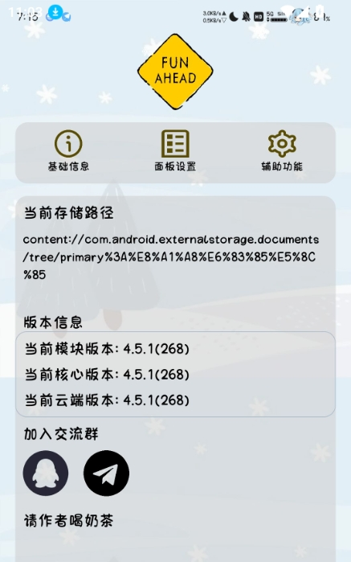
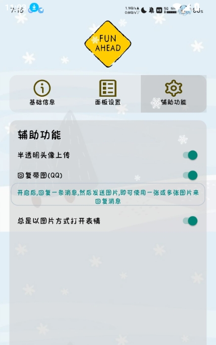

FunBox 全能力盘点：一个模块能把聊天表情和语音玩出多少花样
FunBox 是跑在 LSPosed 框架上的聊天增强模块，为微信、QQ、TIM 提供表情与语音面板。本文从表情包资源、语音消息、作用域管理、日常维护四个能力域展开盘点，同时客观讨论其依赖框架、适配窗口等现实局限。
它是什么，以及为什么值得认真盘点
如果你在 Android 上折腾过 LSPosed 这类模块框架，大概率见过名字里带「Fun」的模块。FunBox 就是其中一款——它不做激进的事情，不碰风控、不批量操作账号，官网上列了完整的支持范围，定位非常清晰：给微信、QQ、TIM 三款聊天应用各注入一个额外面板，让你在聊天时能快速调用表情资源和语音消息。
听起来功能面很窄，但真正用起来会发现它把「表情」和「语音」这两个维度的需求做了很完整的覆盖：不只是发送，还有保存、管理、迁移；不只是面板调用，还有框架生效链路的完整说明。模块免费开源、通过正规渠道发布，包名 have.fun，发行版体积常年维持在 7MB 上下——小而专注的典型。
能力域一：表情包资源体系——把聊天里的表情玩出「素材库」质感
面板调用与在线资源
FunBox 的核心入口是聊天应用里长按输入框弹出的额外面板。面板里预设了多套表情资源，同时支持在线下载更多。下载后的表情落在模块管理的本地目录里，断网也能正常调用——这是它比微信自带表情商店好的地方：自带表情一旦离线就只能用已下载的，而 FunBox 的资源路径对你完全透明。
本地存储与备份迁移
面板里的表情资源本质上就是授权存储目录里的一批文件。模块在基础信息页会明确告诉你当前存储路径是什么。换机前把这个目录整体拷贝走，换机后再授权新路径，表情就原封不动回来了——这一点对攒了上百套表情的重度用户来说价值巨大，微信自带表情做不到这么彻底的迁移。

什么场景用得上
- 日常聊天需要快速甩表情但不想在相册里翻找保存的 GIF；
- 同时在微信、QQ、TIM 三款应用活跃，不想各自攒一套表情；
- 换机或换 ROM 时，希望把表情资产完整迁过去。
能力域二：语音消息面板——把「听完就走」的语音变成可复用素材
语音是 FunBox 里经常被忽视的半壁江山。它对语音做了两件事：从聊天里保存和从面板里发送——一进一出，把语音从「即时沟通的载体」变成了「可以攒起来随时调用的表达素材」。
保存链路
在面板里对在线语音资源执行保存后，内容进入本地语音列表。保存后的语音与下载后的表情同属模块管理的存储体系，落在同一个授权目录下。这意味着备份逻辑和表情完全一致：目录在资源就在，删了就没。
发送链路
从面板把语音发进聊天的操作路径和发送表情类似，只是选中的资源类型不同。语音面板的价值在于：你不用再翻聊天记录找那条朋友发的搞笑语音然后转发，直接在面板里选一下就能发出去——这在群聊里造梗时效率差了一个量级。
三个管理建议
- 命名靠不上就靠分类：语音不像图片能预览内容，数量多了靠滑动浏览找，常用几条留在列表前部最有效率；
- 别囤积：语音的价值在「随手能发」，攒几百条和攒十条的体验天差地别；
- 来源注意版权边界：保存的语音用于个人聊天自娱没问题，二次分发要注意内容本身的版权与合规。

能力域三：基础信息与作用域管理——把生效链路说透
FunBox 模块的生效链路比普通 APK 长不少：装包只是第一环，后面还有启用模块、勾选作用域、重启聊天应用。任何一环没满足条件，最后都会表现成「面板弹不出来」。
模块在基础信息页把这条链路完全透明化了：
- 模块框架环境：手机上需要已经装好 LSPosed 这类框架工具，框架处于已激活状态；
- 聊天应用版本：微信 8.0.40 以上、QQ 9.0.30 以上、TIM 4.0.97 以上——低于这些版本不在支持范围内；
- 存储空间与权限：留出足够存储（模块本体约 7MB，但表情资源下载、图片缓存都会落在本地），首次使用会弹出存储目录授权；
- 启用与作用域：在框架的模块列表里找到 FunBox，勾选上对应的聊天应用作用域，然后重启目标应用。
四项都过了才进入正常使用阶段。这套自检逻辑让排查面板弹不出来的问题时能快速定位到是哪一环断了。
能力域四：日常维护与版本节奏
下载渠道的差异
FunBox 的发行版主要通过三类渠道分发：
- 首选是 LSPosed 模块仓库，包名
have.fun对应的模块页会列出全部发行版，版本号是四位数样式（如 v2173、v1972），历史版本也都保留； - 次选是作者频道，新版本第一时间发布，附带更新说明和反馈评论区；
- 第三方应用商店版本号自成体系（三位数如 v698），部分商店会把它并不具备的功能（壁纸库、小组件、智能分析）写在简介里，参考价值有限。
需要安装包直接从官方下载拿。下载时要核对包名和体积，坚决避开任何带「修改版」字样的来源——来路不明的版本才有越界行为的风险。
版本适配窗口
FunBox 依赖聊天应用的接口，QQ、微信每次大版本更新都可能带来适配空窗。用不了就等更新的心态是使用此类模块的前提。遇到适配问题可以去funbox文档查最新的版本兼容表，模块仓库的更新频率大致跟随聊天应用的版本迭代节奏，适配窗口通常在一两周内。
短板也要说透
盘点不能只讲好处。FunBox 有几个现实局限是每个使用者都需要接受的：
- 框架依赖是硬门槛：没有 LSPosed 或同类框架，它就是个普通 APK，核心功能完全用不上。框架本身的安装和配置对普通 Android 用户来说有一定门槛；
- 聊天应用大版本更新可能断适配：微信、QQ 更一次大版本就可能出现闪退或面板弹不出来的情况，这不是 Bug，是接口变了需要重新适配；
- 账号灰色地带：模块向聊天应用注入代码的行为处于官方服务条款的灰色地带，理论上存在账号被限制的可能。用主号还是小号，每个人自己掂量；
- 功能边界清晰但不花哨：它不做批量操作、不碰风控、没有绕不过去的复杂配置。如果你的需求是更激进的自动化，FunBox 不是那块料。
什么样的人该用它
盘完四个能力域、也聊了短板，最后做个画像——三类人会真正用顺这个模块：
表情包重度爱好者：同时在微信、QQ、TIM 活跃，不想各自攒一套表情资产，换机时也不想丢。FunBox 的统一面板和透明存储路径刚好解决这个痛点。
喜欢用语音表达但嫌麻烦的人：每次想复用某条语音都要翻聊天记录找朋友发的然后转发——保存链路把语音从「听完就走」变成了「攒起来随时发」，在群聊造梗场景下效率差了一个量级。
已经在折腾 Android 框架的玩家：LSPosed 生态的自然延伸。框架本身已经装好了、激活了，加一个 FunBox 只是多勾选一个作用域的事，没有额外的安装负担。
整理好的文档资料和模块发行版在 GitHub、Gitee、GitCode 都有镜像，GitHub 是主仓，国内访问推荐看 Gitee 或 GitCode，三者内容同步维护。